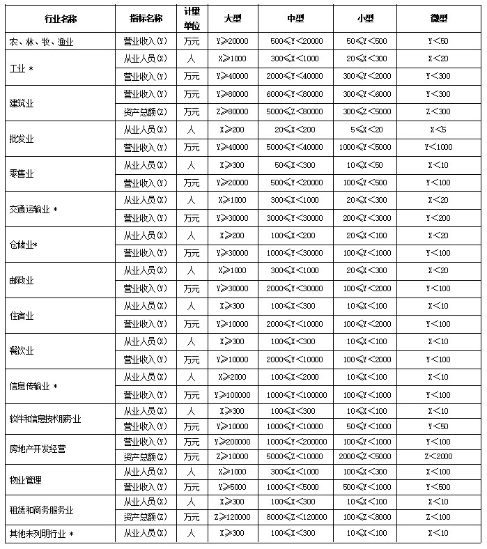

统计上大中小微型企业划分标准

说明：
1.大型、中型和小型企业须同时满足所列指标的下限，否则下划一档；微型企业只须满足所列指标中的一项即可。
2.附表中各行业的范围以《国民经济行业分类》（GB/T4754-2017）为准。带*的项为行业组合类别，其中，工业包括采矿业，制造业，电力、热力、燃气及水生产和供应业；交通运输业包括道路运输业，水上运输业，航空运输业，管道运输业，多式联运和运输代理业、装卸搬运，不包括铁路运输业；仓储业包括通用仓储，低温仓储，危险品仓储，谷物、棉花等农产品仓储，中药材仓储和其他仓储业;信息传输业包括电信、广播电视和卫星传输服务，互联网和相关服务；其他未列明行业包括科学研究和技术服务业，水利、环境和公共设施管理业，居民服务、修理和其他服务业，社会工作，文化、体育和娱乐业，以及房地产中介服务，其他房地产业等，不包括自有房地产经营活动。
3.企业划分指标以现行统计制度为准。（1）从业人员，是指期末从业人员数，没有期末从业人员数的，采用全年平均人员数代替。（2）营业收入，工业、建筑业、限额以上批发和零售业、限额以上住宿和餐饮业以及其他设置主营业务收入指标的行业，采用主营业务收入；限额以下批发与零售业企业采用商品销售额代替；限额以下住宿与餐饮业企业采用营业额代替；农、林、牧、渔业企业采用营业总收入代替；其他未设置主营业务收入的行业，采用营业收入指标。（3）资产总额，采用资产总计代替。